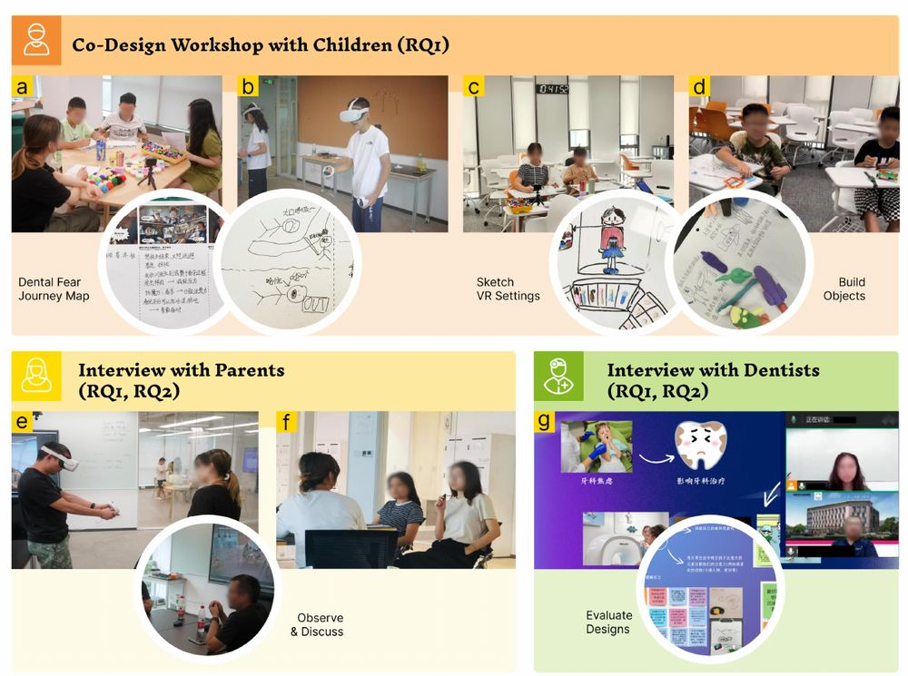
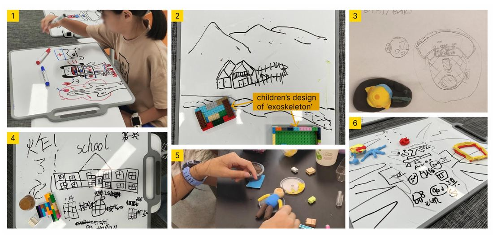
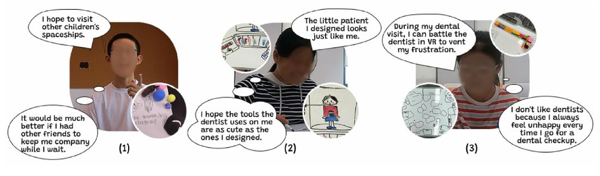

"Can I decorate my teeth with diamonds?"
Exploring how VR could ease children's dental anxiety, with the children designing it, and their parents and dentists telling us what would actually be allowed in the room.
The problem
Dental anxiety leads children to delay care. Sedation worries parents and therapy takes time. Existing VR tools mostly distract, and they're designed without the adults who decide whether a child uses them.
What I did
5 co-design workshops with 13 anxious children aged 10 to 12, parallel interviews with their 13 parents, and design reviews with 2 dentists.
What I found
Each group defined success differently. I turned the conflicts into six product requirements, including using different VR modes before and during treatment.
Context
A product with three customers
A children's health product has a user who experiences it, a gatekeeper who decides whether the user gets it, and an operator who has to work around it. Designing only for the child produces something parents won't allow or dentists can't use mid-procedure. So the study put the child at the center and brought the adults in at the right moments.
Stage 2 · User research · Method
Letting 10-year-olds design, without the adults steering
Recruiting was the first hard problem. We screened 44 children with a standardized dental-fear scale (CFSS-DS) and kept 13 with moderate to severe anxiety. Strict criteria made online recruiting slow, so I printed posters and took them to elementary schools.
- Journey mapChildren mapped their last dental visit with comics: triggers, coping, what helped.
- VR inspiration5 minutes each in three Quest 2 apps: active play, a passive 360° film, a dental simulation.
- DesignSettings, characters and sounds with paper, Lego and plasticine, then bodystorming the interactions.
- PresentChildren demoed their designs and gave each other feedback.
- Adult reviewParents reacted to the designs; dentists reviewed summaries for safety and workflow.
- Children
- 13, aged 10 to 12, in 5 workshops of 2 to 3, 150 to 210 min with long breaks
- Parents
- 13, watched remotely from another room so they couldn't steer, then interviewed
- Dentists
- 2 (one pediatric, one general), ~1 hour remote design reviews
- Analysis
- Reflexive thematic analysis; 3 coders, independent first pass, cross-checked

Stages 3–4 · Synthesis and modeling · Findings
One headset, three definitions of success

| Group | Theme | What it covers |
|---|---|---|
| Children | A · Prepare before treatment | Explore a virtual clinic, role-play the dentist, meet other scared kids |
| Children | B · Engage during treatment | Control while lying still, calm or cathartic play, hide stressors |
| Parents | C · Teach oral health | Replays after treatment, prevention built into everyday play |
| Parents | D · Protect health and content | Eyesight, time limits, addiction, no violent content |
| Dentists | E · Safety and workflow | Stillness, accurate previews, hospital purchasing and upkeep |
| Dentists | F · Supplement, not substitute | Parents stay essential; one session isn't enough |
Reading the six themes side by side gave a stakeholder map: the child as user, the parent as gatekeeper, the dentist as operator.
User
Children
- Want
- Control while lying still: a controller mounted on the chair. Friends who are scared too. A rehearsal where they play the dentist.
- Surprise
- Some wanted to blow off steam with combat games, not calm scenes.
"I hope it can support multiplayer mode so that I wouldn't feel lonely."C8
Gatekeeper
Parents
- Want
- VR that teaches oral hygiene, not just distraction, such as a replay of the procedure afterward.
- Worry
- Eyesight, screen time (about 30 minutes felt reasonable), addiction, and violent content.
Nearly all parents raised prolonged use and eyesight as their first concern.Pattern across parent interviews
Operator
Dentists
- Want
- A child who stays still. Calm, passive content during treatment and realistic previews beforehand.
- Worry
- Exciting games make kids move. VR could shift support away from parents. Hospitals must buy and maintain it.
"VR cannot replace any role."Dentist

The children's most exciting ideas were the ones dentists found most dangerous in the chair.
That tension shaped the main requirement: split the product by stage. Active, playful, social VR at home or in the waiting room before treatment. Calm, passive VR in the chair, where stillness matters.
Outcome · Product requirements
From conflicting needs to product requirements
Stage-based modes
Interactive before treatment, passive during. Resolves child excitement vs. dentist safety.
Adaptive exposure
Start cartoon-like, move toward realism as anxiety drops, and blur specific stressors. Resolves comfort vs. accurate expectations.
Control within limits
Chair-mounted input and open exploration that respects a still body.
Safe peer connection
Moderated shared spaces, with privacy designed in for minors.
Family co-selection
Parents and children choose content together, which turns parents' content limits into a shared ritual.
Clinical fit
Session time limits, no gore or aggression, staff training, equipment upkeep and consented record-keeping.
Reflection
What researching with children taught me
Worked
- Hands-on materials and bodystorming got 10-year-olds past "make it fun".
- Keeping parents in a separate room protected the children's ideas.
- Dentist reviews grounded ideas in clinical reality early.
Limits
- All participants in a Chinese context; 2 dentists only.
- Concepts, not a working system, so no effectiveness data.
- Families interested in technology were likelier to sign up.
Next time
- Prototype the stage-based modes and test them in a clinic.
- Recruit more dentists and dental nurses.
- Follow families over multiple visits.